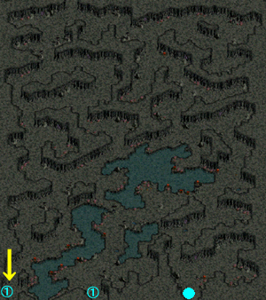
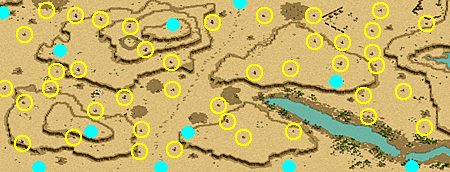
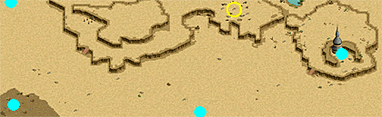

ポーター
<称号効果>- インベントリ サイズ [31~42]
<説明>
- アイテムの保有個数増加
| 称号効果 | ||||||||||
|---|---|---|---|---|---|---|---|---|---|---|
| 称号Lv | 1 | 2 | 3 | 4 | 5 | 6 | 7 | 8 | 9 | 10 |
| インベントリ サイズ | 31 | 32 | 33 | 34 | 36 | 37 | 38 | 39 | 40 | 42 |
| ティレンドの頼みごと | |
|---|---|
渡された鉄の塊をブルンネンシュティグの製鉄所のスティントンに届けよう。 廃坑地下5階で石炭を掘っているバラフェドを探して、効率の良いカバンの使い方を教えてもらおう。 神聖都市アウグスタで売っているフルヒールポーションを1つ買って、廃坑地下5階のバラフェドの所に戻ろう。 |
|
| 受諾場所 | 鉱山町ハノブ ティレンド（100.42） |
| 受諾条件 | Lv14 |
| 報酬 | 経験値9000 ポーターLv2 |
| 古都ブルンネンシュティグ | 必要なインベントリの空き15個 スティントン（185.168）へ |
| 廃坑 Ｂ５ | バラフェド（73.47）へ (1)いくら払えばいいですか？ → (1)5,000,000ゴールドです。 → 500万G払う (2)どうすればいいですか？ → (2)はい。買って来ます。 → フルヒールポーションを渡す |
| クリムテインの頼みごと | |
|---|---|
ブルンネンシュティグ南の沼地洞窟でビランデルス、マレラを探そう。 ブルンネンシュティグ南の沼地洞窟でビランデルスを捜し出して話をしよう。 ブルンネンシュティグ南の沼地洞窟でマレラを捜し出して話をしよう。 ブルンネンシュティグ南の沼地洞窟でイリュージョンを捜し出してその霊魂を手に入れよう。 アウグスタのクリムテイン神父に手に入れた霊魂を渡そう。 |
|
| 受諾場所 | 神聖都市アウグスタ クリムテイン（112.156） |
| 受諾条件 | Lv21 |
| 報酬 | 経験値2万7000 ポーターLv3 |
| ギルディル川 沼地洞窟 Ｂ２ | マレラ（234.77）へ ピランデルス（98.4）へ マレラへ イリュージョン（Lv21）を倒す |
| 神聖都市アウグスタ | クリムテインへ |
| ベルラドの頼みごと | |
|---|---|
鉄の道ハノブ入り口付近のハノブ旧町跡地辺りで発見されるリトルエントを倒そう。カバンがリトルエント木材でいっぱいになったらベルラドの所に戻って木材を渡してからまた集めよう。 必要なリトルエント木材を全て集めた。ベルラドの所にリトルエント木材を持って行こう。 |
|
| 受諾場所 | 港街ブリッジヘッド ベルラド（4.99） |
| 受諾条件 | Lv28 |
| 報酬 | 経験値5万 8000G ポーターLv4 |
| 鉄の道 / ハノブ入口付近 | 必要なインベントリの空き1～30個 （30個あれば2回で終了。1個ずつ分割して渡すことも可能） リトルエント（Lv55）を倒す |
| 港街ブリッジヘッド | ベルラドへ |
| クロマティガード312期の危機 | |
|---|---|
アリアンの制服担当係のシェラザードから制服に付けるアクセサリーを頼まれた。アクセサリーはアウグスタのモリガンという人が扱うらしい。まずはシェラザードから預かった手紙をモリガンに届けよう。 モリガンからアクセサリーを作る為の材料を持ってくるよう言われた。材料は3種類あり、必要な数はそれぞれ50個ずつ必要で ‘ゴートマンの角’、‘鷲闘士のしっぽ羽毛’、‘サイドウォーカーの殻’ だ。ブリッジヘッド北側のテンドペンド平原とトワイライト滝の近くに生息しているらしい。カバンに空きがなければ、集めた各アイテムを5個ずつモリガンに届けよう。 全ての材料が集まった。モリガンの所へ戻ってみよう。モリガンから品物を受け取る為には少なくともカバンを15個空けなくてはならない。 モリガンからもらった品物をシェラザードに届けよう。 |
|
| 受諾場所 | 砂風酒場 シェラザード（20.13） |
| 受諾条件 | Lv35 |
| 報酬 | 経験値2万5000 1万4000G ポーターLv5 |
| 神聖都市アウグスタ | モリガン（90.105）へ |
| テンドペンド平原 / トワイライト滝付近 | 必要なインベントリの空き3～30個 （30個あれば1回で終了。3種類×5個の1セットずつ分割して渡すことも可能） ゴートマン（Lv80）、サイドウォーカー（Lv77）を倒す |
| テンドペンド平原 / ブリッジヘッド北部地域 | 鷲闘士（Lv70）、サイドウォーカー（Lv70）を倒す |
| 神聖都市アウグスタ | モリガンへ 必要なインベントリの空き15～30個 （30個あれば1回で終了。15個ずつ2回に分割して渡すことも可能） モリガンへ |
| 砂風酒場 | シェラザードへ |
| どうか早く！ | |
|---|---|
港街シュトラセラトのザハードの唯一の客であるセルピコが、注文した魔力が籠められた木彫人形がまだ届かないとイライラしているらしい。ブリッジヘッドの貿易商人モレンに会いに行こう。 モレンが運ぶ予定だった魔力が籠められた木彫人形は、バヘル台地 / エルベルグ山脈西部地域の原始人たちに奪われたという。原始人たちを倒し、魔力が籠められた木彫人形を取り戻さなければならない。 魔力が籠められた木彫人形 20個をすべて取り戻した。シュトラセラトのザハードのところに戻ろう。 グレートフォレスト ネイブ滝付近にいるセルピコに品物を配達しよう。制限時間内に配達しなければならない。 制限時間は、40分だ。 セルピコに、品物の配達が完了した。シュトラセラトのザハードのところに戻ろう。 |
|
| 受諾場所 | 港街シュトラセラト ザハード（77.134） |
| 受諾条件 | Lv70 |
| 報酬 | 経験値3万 ポーターLv6 |
| 港街ブリッジヘッド | モレン（19.87）へ |
| バヘル台地 / エルベルグ山脈西部地域 | 必要なインベントリの空き20個 原始人（Lv64）を倒す 鉱山町ハノブ←↑←   |
| 港街シュトラセラト | 必要なインベントリの空き23個 （木彫人形20個以外に+3個） ザハードへ |
| グレートフォレスト ネイブ滝付近 | 40分以内にセルピコ（248.39）へ |
| 港街シュトラセラト | ザハードへ |
| メディッチ家の策略 | |
|---|---|
大きな町バリアートの裁縫師 チアトラが、大量に購入した布を使用してバリアートの全住民に服を作ってくれという依頼を受けた。彼女に依頼した領主メディッチのところに行き、布を買うのに必要な経費をもらってこよう。 ブリッジヘッドの布問屋 ホットンのところに行って、布を買おう。 ブリッジヘッドの布問屋 ホットンが売っているナセトラ布地を買い占めたパーチに会いに行こう。彼は、神聖都市アウグスタいるという。 神聖都市アウグスタのパーチが、トワイライト滝 Ｂ２で失ったパーチ家紋のペンダントとパーチの母親の遺骨を探し出して来たら、ナセトラ布地をくれるという。トワイライト滝 Ｂ２に行って探し出そう。 パーチ家紋のペンダントとパーチの母親の遺骨をすべて見つけた。神聖都市アウグスタのパーチのところに戻ろう。 ナセトラ布地を持って、大きな町 バリアートの裁縫師 チアトラのところに戻ろう。 |
|
| 受諾場所 | 大きな町 バリアート チアトラ（73.78） |
| 受諾条件 | Lv140 |
| 報酬 | 経験値16万 ポーターLv7 |
| 大きな町 バリアート | 領主メディッチ（105.33）へ |
| 港街ブリッジヘッド | ホットン（138.88）へ |
| 神聖都市アウグスタ | パーチ（125.22）へ |
| トワイライト滝 Ｂ２ | 宝箱（71.36）と遺骨（46.67）をクリック B2の右側へ行くには、1Fの左側、B1の右側の移動ポータルから入る  |
| 神聖都市アウグスタ | 必要なインベントリの空き30個 パーチへ |
| 大きな町 バリアート | チアトラへ |
| アタディウムの鎧 | |
|---|---|
新興王国ビガプールの鎧商人 ステルンは、競争関係のもう一人の鎧商人 ホッペンに勝つ為に、アタディウムの鎧を作ろうとしている。アタディウム鉱石に関して知っている、ステルンのいとこ ビルテンに会いに行こう。彼は、鉱山町ハノブにいる。 ビルテンが教えてくれた、いつもフラフラしている酔っ払いの鉱夫 ビテイオンに会いに行こう。彼はロムバル酒というお酒に目が無いそうなので、一本買って行こう。近所の密造酒屋を探してみよう。 ビテイオンが教えてくれたアタディウム鉱石をインゴットに変えられるという鍛冶職人のサンドロを訪ねよう。彼は近所の鍛冶屋にいるはずだ。 アタディウム鉱石をインゴットに変える際に必要な鋳型を作るために、滑らかで軟らかいタルクが必要である。廃坑 Ｂ１で発見できるという。廃坑 Ｂ１に行って、クレイゴーレム、ロックゴーレム、メタルゴーレムを倒して手に入れよう。 滑らかで軟らかいタルク 10個をすべて手に入れた。鉱山町ハノブにいるサンドロのもとに戻ろう。 ステルンに必要なアタディウムインゴットが、すべて手に入った。新興王国ビガプールに戻り、ステルンに届けよう。 |
|
| 受諾場所 | 新興王国ビガプール ステルン（58.118） |
| 受諾条件 | Lv210 |
| 報酬 | 経験値43万5000 ポーターLv8 |
| 鉱山町ハノブ | ビルテン（7.84）へ 密造酒屋（17.32）へ、30万G払う 必要なインベントリの空き30個 ビテイオン（101.26）へ サンドロ（43.21）へ |
| 廃坑 Ｂ１ | クレイゴーレム（Lv35）、ロックゴーレム（Lv40）、メタルゴーレム（Lv35）を倒す |
| 鉱山町ハノブ | 必要なインベントリの空き32個 （タルク2マス以外に+30個） サンドロへ |
| 新興王国ビガプール | ステルンへ |
| 各地の特産品の配達 | |
|---|---|
港街シュトラセラトの貿易商人 ザハードのところに行こう。彼にミランダが販売を始めたエルフたちの品物を売って特産品を探しに行こう。品物はカバンの空きの分だけ受け取って売ることができる。 港街シュトラセラトで穀物を売っている穀物商人 オルデンに会いに行こう。オルデンから、ラカリフサ小麦 5束を買ってミランダに届けよう。カバンに空きがあれば次の特産品を買いに行こう。 港街ブリッジヘッドの港周辺でバリアートの特産品 干した魚を売っている商人を探してみよう。魚を売る商人を探して、干した魚 5匹を買ってミランダに届けよう。カバンに空きがあれば次の特産品を買いに行こう。 神聖都市アウグスタで、ボルディオ・ワインを売っている商人を探してみよう。ワインを売っている商人を探して、ボルディオ・ワイン を5本買ってミランダに届けよう。カバンに空きがあれば次の特産品を買いに行こう。 鉱山町ハノブで、超強度鋼インゴットを売っている鍛冶職人を探してみよう。超強度鋼インゴットを売っている鍛冶職人を探し出して、超強度鋼インゴット を5個買ってミランダに届けよう。 農村ガリムトの雑貨店商人 ミランダが探し出してくれと言った各地の特産品をすべて手に入れた。彼女のところに戻ろう。 |
|
| 受諾場所 | ガリムト武器・雑貨店 ミランダ（13.11） |
| 受諾条件 | Lv280 |
| 報酬 | 経験値89万 ポーターLv9 |
| 港街シュトラセラト | 必要なインベントリの空き4～16個 （16個あれば1回で終了。4個ずつ分割して渡すことも可能） ザハード（77.134）へ 必要なインベントリの空き6～21個 （21個あれば1回で終了。4回に分割して渡すことも可能） オルデン（128.110）へ |
| 港街ブリッジヘッド | ザコール（12.124）へ |
| 神聖都市アウグスタ | オベル（168.104）へ |
| 鉱山町ハノブ | ビアン（70.54）へ |
| ガリムト武器・雑貨店 | ミランダへ |
| なんだか怪しい配達任務 | |
|---|---|
魔法都市スマグの魔法師兼錬金術師 ニビウスに、荒廃都市ダメルで遺跡を発掘している考古学者 オルブスに怪しい空き箱 30個を渡して欲しいと頼まれた。 荒廃都市ダメルの考古学者 オルブスに、デフヒルズで古代の結晶体を30個集めてくれと頼まれた。古代の結晶体は、古代人の遺跡群を調査すると発見できる。 デフヒルズで古代の結晶体 30個をすべて手に入れた。荒廃都市ダメルの考古学者 オルブスのところに戻ろう。 荒廃都市ダメルの考古学者 オルブスに、ガディウス大砂漠 / デフヒルズ北側で、カラモスの骨から欲望の精粋を集めてくれと頼まれた。カラモスの骨は、ガディウス大砂漠 / デフヒルズ北側の人里離れた場所にあるという。 ガディウス大砂漠 / デフヒルズ 北部で、欲望の精粋を手に入れた。荒廃都市ダメルにいる考古学者 オルブスのところに戻って渡そう。 荒廃都市ダメルで考古学者 オルブスから、いっぱいになった怪しい箱 30個を魔法都市スマグにいるニビウスに渡して欲しいと頼まれた。ニビウスのところに行こう。 |
|
| 受諾場所 | 魔法都市スマグ ニビウス（16.83） |
| 受諾条件 | Lv350 |
| 報酬 | 経験値155万 ポーターLv10 |
| 荒廃都市ダメル | 必要なインベントリの空き30個 オルブス（40.31）へ |
| デフヒルズ | 必要なインベントリの空き30個 遺跡をクリック （2.137）（15.223）（17.161）（18.51）（36.12）（39.137）（44.111）（57.216）（59.21）（61.107）（75.173）（79.27）（98.152）（102.38）（110.239）（111.205）（115.75）（135.96）（135.140）（138.234）（168.31）（173.164）（180.190）（193.215）（202.112）（209.21）（229.107）（233.206）（249.21）（250.61）（270.97）（272.64）（288.149）（292.182）（295.44）（296.82）（299.100）（301.13）（320.140）（337.198）（339.34） の41箇所程あるが、少し時間が経つと何度でもクリックできる。  |
| 荒廃都市ダメル | オルブスへ |
| ガディウス大砂漠 / デフヒルズ北側 | 必要なインベントリの空き31個 カラモスの骨(156.8)をクリック カラモスの魂（Lv350）Zinが出現、倒す。ターンアンデッドによる即死可能  |
| 荒廃都市ダメル | オルブスへ |
| 魔法都市スマグ | ニビウスへ |